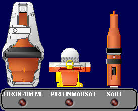

Radiobalizas de Emergencia
El usuario utiliza el panel de activación de las radiobalizas de emergencia para activar de forma simulada los dispositivos lanzables de socorro, básicamente las radiobalizas EPIRB y los transpondedores radar.
Consta de pulsadores para activar los siguientes dispositivos:
Cada pulsador tiene asociado una indicación luminosa para señalizar la activación efectiva de la señal correspondiente.
